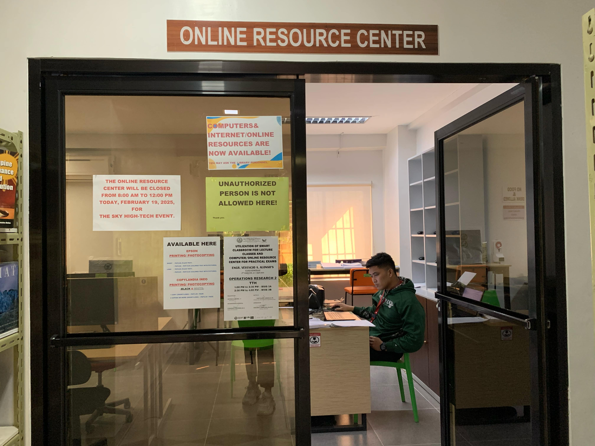

Online Resource Center
The Online Resource Center is designed to supplement the print resources available in the library. It provides students and faculty with access to a variety of digital materials to enhance research and learning.

PRINTING AND PHOTOCOPYING SERVICES ARE AVAILABLE HERE
For file printing, feel free to contact us and send your files through any of the following:
Guidelines for Use:
- Educational Purpose Only – Opening of websites unrelated to academic work is strictly prohibited.
- First-Come, First-Serve Basis – Workstations are available on a first-come, first-serve basis.
- Time Limit – Each student is allowed a maximum of one hour per session. Extensions are only permitted if no other users are waiting.
- ID Requirement – Students must leave their ID with the staff before using the facility.
- The staff will scan the student’s ID into the system for computer resource monitoring.
- After scanning, the staff assigns a computer terminal and provides the student with the corresponding mouse and keyboard.
- Upon exit, the student must return the assigned mouse and keyboard to the staff and claim back their ID.
Additional Guidelines:
- Students are expected to behave properly while using the online resource center.
- Faculty and students are encouraged to bring their own headset for hygiene purposes.
- Vandalism in any form against the equipment or the room is strictly prohibited and punishable under CTU/Library policy.
The Online Resource Center (ORC) is located across the entrance, near Research & Learning Hub 1 and 2, commonly known as the Discussion Rooms.